成品库码\拆垛机器人更换电池步骤
适用范围
适用于ABB机器人
作业准备 (安全评估、工具准备)
作业安全因素
防止工具伤人
防止电机坠落
工具准备
内六角、扳手、胶锤、铁锤、一字螺丝批、梅花头螺丝批、套筒
作业步骤
1)将机器人钥匙开关打至手动状态
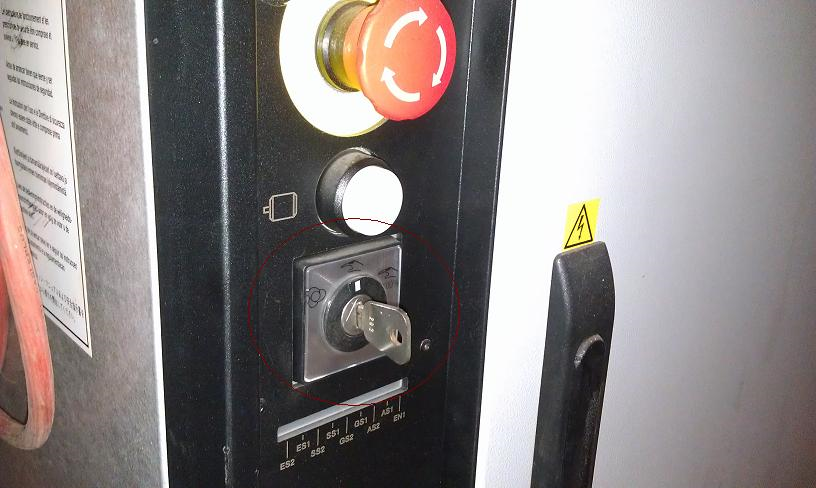
2)点击示教器左上方ABB处，进入操作界面，点击“手动操纵”
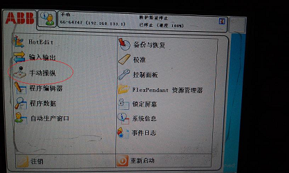
3)手动操作机器人六轴至0°基准位置
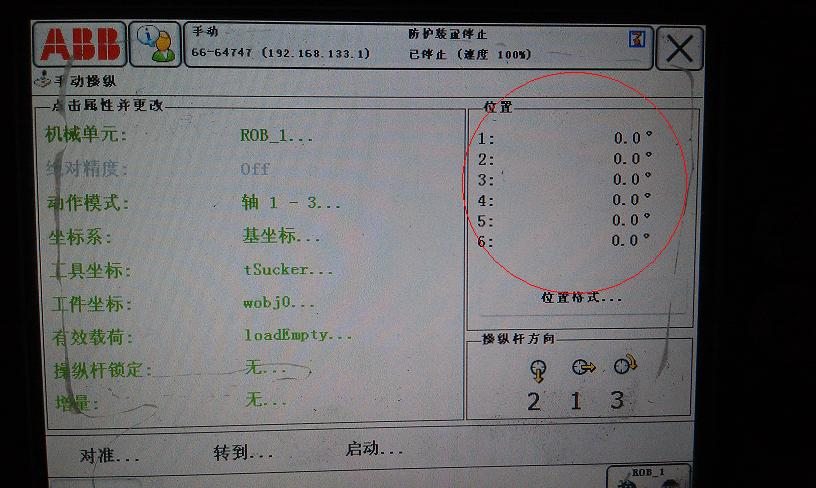
4)机器人在基准位置时姿态
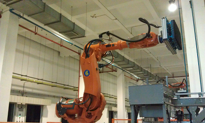
5)关闭控制柜电源
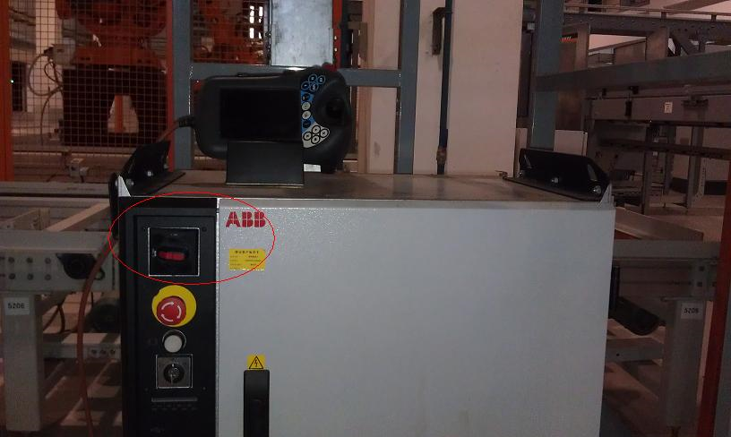
6)拆开电池盖即可看到电池
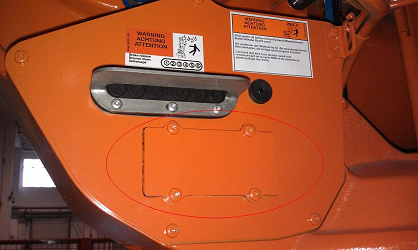
7)更换相同型号电池
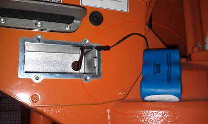
8)装回电池后对机器人重新上电
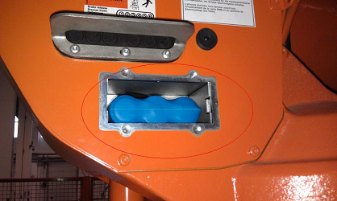
9)进入操作界面，点击“校准”
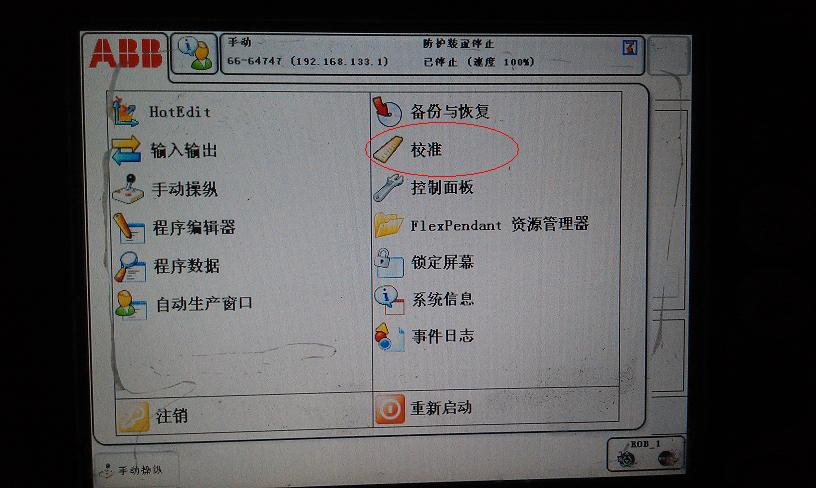
10)进入校准界面后点击“ROB-1”
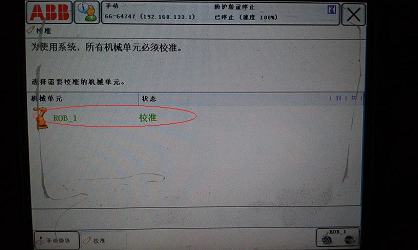
11)点击“更新转轴计算器”，对机器人六根轴的计算器进行更新
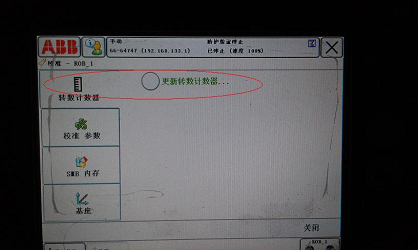
12)更新后手动操作机器人回到“home”点，姿态如图
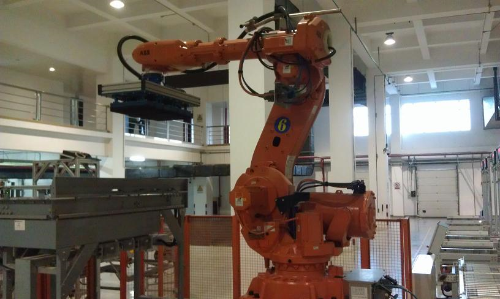
13)将机器人钥匙开关打至自动，设备进入待机状
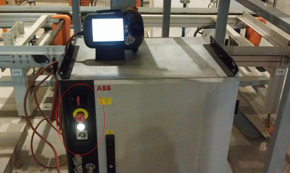
效果检查
验收标准
各零部件并无变形
电机正常无损坏
作业结束
收拾现场，零件是否漏装，工具无遗落
最后保持现场清洁
总结
装配过程应注意配合要求，防止安装失败
安装过程需要对编码器参数进行校准